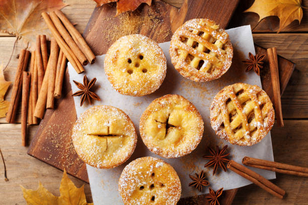

Mini Apple Pies

Description
These delicious bite sized (almost) apple pies are perfect for any large family gathering, just make sure to cook enough!
Ingredients
- Salt
- Two and a Half Apples (Medium)
- Pie Crust Dough
- Sugar
- Flour
- Vanilla extract
- Cinnamon
- Water
- Ground Nutmeg
- Oil
- Mini muffin pan
Steps
- Preheat oven to 425F
- Cut pie crust 3.5 in. in diameter
- Lightly spray mini muffin pan and insert into all 12 spaces
- Mix in bowl 2.5 Cups diced apples
- 1/4 cup sugar
- 1 tbsp four
- 2 tbsp water
- 1 tsp vanilla extract
- 1 tsp cinnamon
- 1/8 tsp ground nutmeg
- Evenly pour mixture into all 12 spaces in the muffin pan
- Cook on center rack for 20-25 mins or until golden brown
- Let cool for 20 mins
- Enjoy!
Back